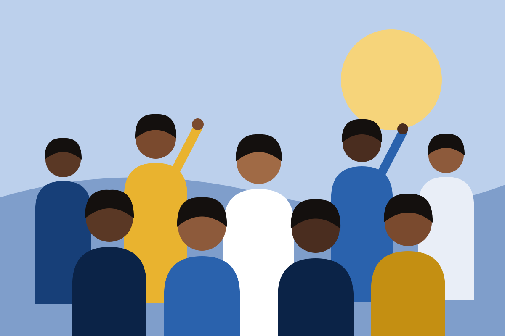

A juventude angolana a participar na construção do país
Acompanhe as notícias, os eventos, os comunicados e as actividades do Conselho Nacional de Juventude.

O Conselho Nacional de Juventude
Texto provisório
Este espaço destina-se à apresentação institucional do CNJ: a sua natureza, o papel que desempenha junto das organizações juvenis e a forma como os jovens podem acompanhar o seu trabalho.
O texto definitivo deverá ser fornecido e aprovado pela instituição.
Ler sobre o CNJ- Missão
- Visão
- Valores